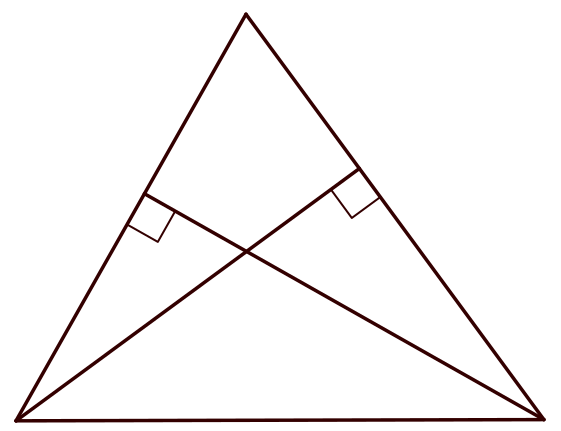
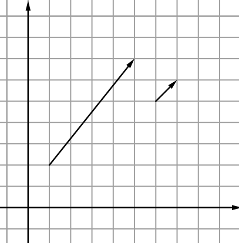

$\newcommand{\tg}{\text{tg}}$
$\newcommand{\br}[1]{\left(#1\right)}$
$\newcommand{\vbr}[1]{\left|#1\right|}$
$\newcommand{\cbr}[1]{\left\{#1\right\}}$
$\newcommand{\rbr}[1]{\left[#1\right]}$
$\renewcommand{\le}{\leqslant}$
$\renewcommand{\ge}{\geqslant}$
Единый государственный экзамен по МАТЕМАТИКЕ
Профильный уровень
Инструкция по выполнению работы
Экзаменационная работа состоит из двух частей, включающих в себя 19 заданий. Часть 1 содержит 12 заданий с
кратким ответом базового и повышенного уровней сложности. Часть 2 содержит 7 заданий с развёрнутым ответом
повышенного и высокого уровней сложности.
На выполнение экзаменационной работы по математике отводится 3 часа 55 минут (235 минут).
Ответы к заданиям 1–12 записываются по приведённому ниже образцу в виде целого числа или конечной
десятичной дроби. Числа запишите в поля ответов в тексте работы, а затем перенесите их в бланк ответов № 1.
При выполнении заданий 13–19 требуется записать полное решение и ответ в бланке ответов № 2.
Все бланки ЕГЭ заполняются яркими чёрными чернилами. Допускается использование гелевой или капиллярной ручки.
При выполнении заданий можно пользоваться черновиком. Записи в черновике не учитываются при оценивании
работы.
Баллы, полученные Вами за выполненные задания, суммируются. Постарайтесь выполнить как можно больше заданий и
набрать наибольшее количество баллов.
После завершения работы проверьте, чтобы ответ на каждое задание в бланках ответов № 1 и № 2 был записан под
правильным номером.
Желаем успеха!
Справочные материалы
$ \sin \br{2 \alpha} = 2 \sin \alpha \cdot \cos \alpha $
$ \cos \br{2 \alpha} = \cos ^{2} \alpha - \sin ^{2} \alpha $
$ \sin \br{\alpha + \beta} = \sin \alpha \cdot \cos \beta + \cos \alpha \cdot \sin \beta $
$ \cos \br{\alpha + \beta} = \cos \alpha \cdot \cos \beta - \sin \alpha \cdot \sin \beta $
В треугольнике со сторонами $26$ и $28$ проведены высоты к этим сторонам. Высота, проведённая к большей
из этих сторон, равна $13$. Чему равна высота, проведённая к меньшей стороне?

На координатной плоскости изображены векторы $\vec{a}$ и $\vec{b}$. Найдите длину вектора $\vec{a} -
\vec{b}$.

$y$
$x$
$0$
$1$
$1$
$\vec{a}$
$\vec{b}$
Дано два цилиндра. Объём первого цилиндра равен $9$. У второго цилиндра высота в $1,5$ раза меньше, а
радиус основания в $2$ раза больше. Найдите объём второго цилиндра.
В сборнике билетов по математике всего $48$ билетов. Из них в $12$ встречается вопрос по теме «Логарифмы».
Найдите вероятность того, что случайно выбранный билет не будет содержать вопрос по теме «Логарифмы».
Стрелок в тире стреляет по мишени до тех пор, пока не поразит её. Известно, что он попадает в цель с
вероятностью $0,5$ при каждом отдельном выстреле. Сколько патронов необходимо дать стрелку, чтобы он поразил
цель с вероятностью не менее $0,7$?
Решите уравнение $\br{x + 4}^3 = {-216}$.
Найдите значение выражения $39 \sqrt{2}\ \tg \dfrac {\pi} {4} \cdot \sin \dfrac {\pi} {4}$.
На рисунке изображён график функции $y = f \br{x}$ и отмечены точки ${−1}$, $1$, $3$ и $4.$
В какой из этих точек значение производной наименьшее? В ответ укажите эту точку.
$y$
$x$
$y = f\br{x}$
$-1$
$1$
$3$
$4$
В ходе распада радиоактивного изотопа его масса уменьшается по закону
$${m = m_{0} \cdot {2}^{{-\dfrac{\tau}{T}}}}$$ где $m_0$ — начальная масса изотопа, $\tau$ —
время, прошедшее от начального момента, $T$ — период полураспада. В начальный момент времени масса
изотопа $80$ мг. Период его полураспада составляет 15 минут. Через сколько минут масса изотопа будет равна
$10$ мг?
Паша и Ваня выполняют одинаковый тест. Паша отвечает за час на $8$ вопросов теста, а Ваня — на $10$.
Они одновременно начали отвечать на вопросы теста, и Паша закончил свой тест позже Вани на $51$ минуту.
Сколько вопросов содержит тест?
На рисунке изображён график функции $f\br{x} = \dfrac {k} {x}$. Вычислите $f \br{50}$.
$y$
$x$
$0$
$1$
$1$
$y = f \br{x}$
Найдите точку минимума функции $f\br{x} = x^2 - 33x + 130\ln{x} + 22$.
- Решите уравнение: $$ 4\cos^{2} {x} + 4\cos\br{\frac {\pi} {2} + x} = 1 $$
- Укажите корни этого уравнения, принадлежащие отрезку $\rbr{\pi; \dfrac {5 \pi} {2}}$.
В кубе $ABCDA_{1}B_{1}C_{1}D_{1}$ все рёбра равны $7$. На ребре $BB_{1}$ отмечена точка $K$ так, что
$BK = 3$. Через точки $C_{1}$ и $K$ проведена плоскоть $\alpha$ параллельно прямой $BD_{1}$.
- Докажите, что $A_{1}P : PB_{1} = 1 : 3$, если плоскость $\alpha$ пересекает ребро $A_{1}B_{1}$ в
точке $P$.
- Найдите объём большей из частей куба, на которые его делит плоскость $\alpha$.
Решите неравенство $\dfrac {2 \log_{6} \big( x^2 + 4x \big) } {\log_{6} \big( x^2 \big) } \le 1$.
Вклад планируется открыть на четыре года. Первоначальный вклад составляет целое число миллионов
рублей. В конце каждого года банк увеличивает вклад на $10\%$ по сравнению с его размером в начале года.
Кроме этого, в начале третьего и четвёртого годов вкладчик ежегодно пополняет вклад на $10$ млн рублей.
Найдите наибольший размер первоначального вклада, при котором банк через четыре года начислит на вклад
меньше $15$ млн рублей.
На стороне $AB$ и диагонали $AC$ квадрата $ABCD$ отмечены точки $M$ и $N$ соответственно таким образом,
что $AM : MB = 1 : 6$ и $AN : NC = 4: 3$.
- Докажите, что точки $A$, $M$, $N$ и $D$ лежат на одной окружности.
- Найдите расстояние от точки пересечения диагоналей четырёхугольника $AMND$ до прямой $MN$, если
сторона квадрата равна $56$.
Найдите все значения параметра $a$, при которых уравнение
$$\dfrac {x^2 - a\br{a - 1} x - a^3} {{\sqrt{3 + 2x - x^2}}} = 0$$
имеет два различных решения.
Для любой тройки натуральных чисел $a$, $b$ и $c$ (необязательно различных) вычисляется новое число
$d$ следующим образом: $$d = a^2 + b^2 + c^2 - bc + ab - 2ac.$$
- Существуют ли такие числа $a$, $b$ и $c$, что число $d$ равно $28$?
- Существуют ли такие числа $a$, $b$ и $c$, что число $d$ равно $62$?
- Найдите наибольшее возможное $d$, если известно, что числа $a$, $b$ и $c$ двузначные, а $d$ делится
на 5.